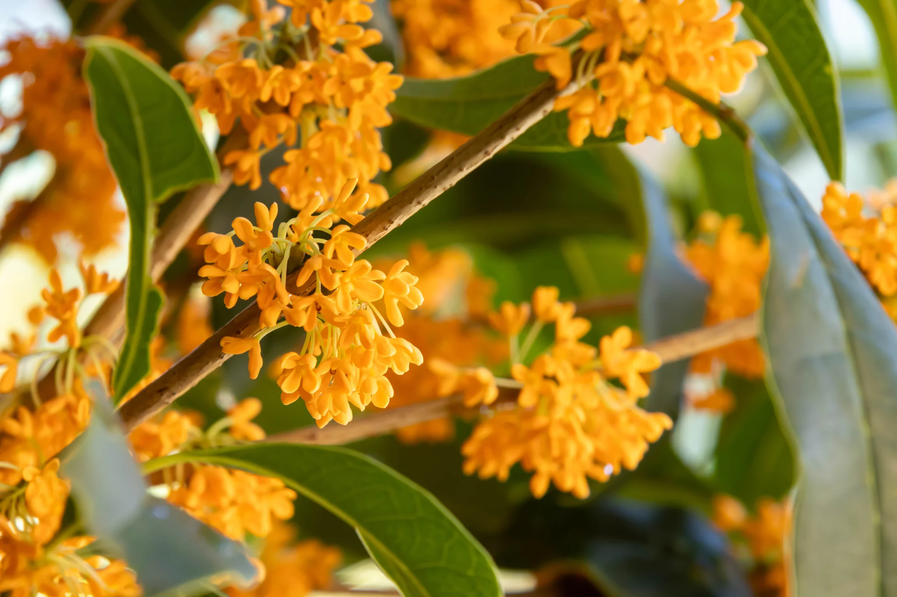
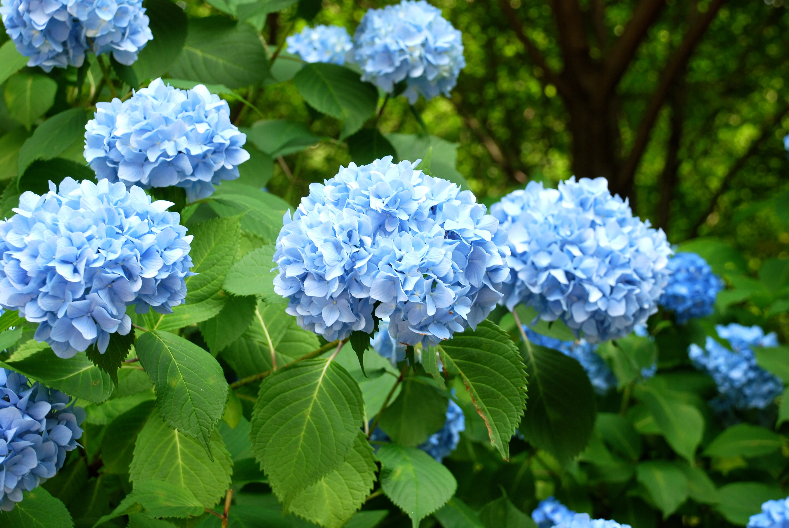
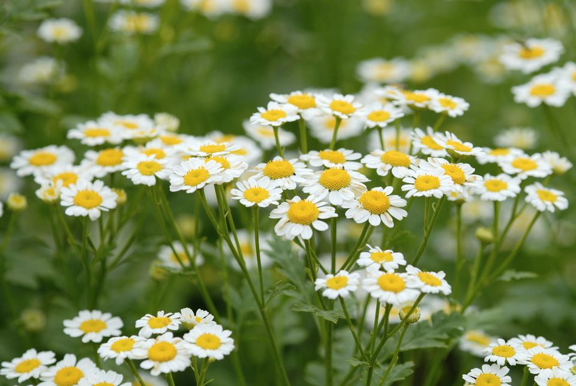
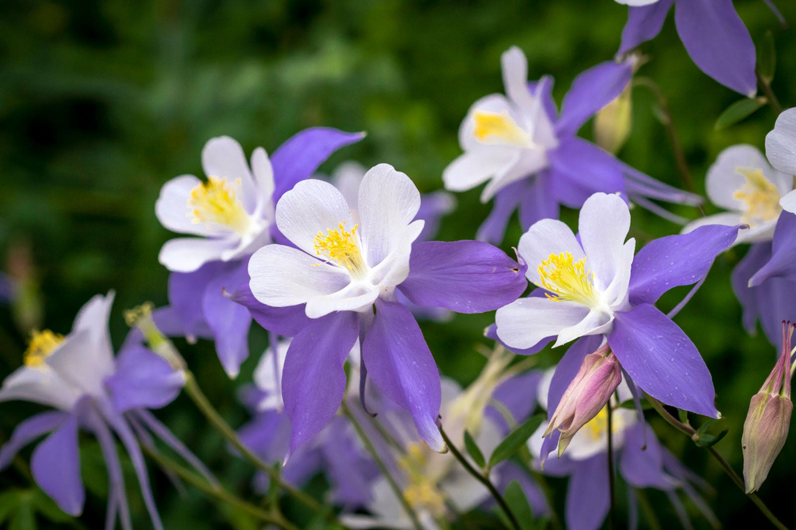

Osmanthus

Hydrangea

Chamomile

Columbine
While roses and lilies are famous for their romantic meanings, the true bullshi- masters of Floriography
often relied on more unique, lesser-known blooms to convey complex messages. The flowers below
are just unique ones I picked out randomly but they carry deep, sometimes surprising meanings that the Victorians used to express everything from
quiet patience to heartfelt gratitude.
| Flower | Traditional Color | Hidden Meaning |
|---|---|---|
| Osmanthus | Golden / Orange | Inspiration, Strategy, and Protection |
| Hydrangea | Blue / Pink | Pride, Vanity, and Heartfelt Gratitude |
| Chamomile | White / Yellow | Patience, Peace, and Energy in Adversity |
| Columbine | Red / Purple | Trust, Devotion, and Humility |
Here's a fun fact: The Hydrangea has a dual meaning! In the Victorian era, it was sometimes given to express vanity or boastfulness because the flower produces large, showy blooms but very few seeds. it was often seen as a symbol of pride or arrogance and would be gifted by victorian men to women they were trying to impress. Hydrangeas were a sign of red flagged men basically. However, now in modern floriography, it is highly prized as a symbol of heartfelt gratitude and everlasting love. Similarly,
Something cool about the Columbine: The Columbine generally represents humility or folly, a red columbine specifically carries the beautiful message: "I will not forsake you."